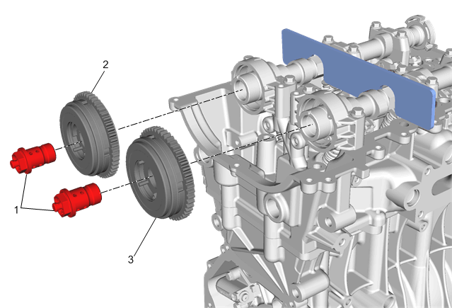
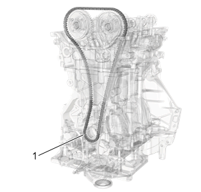

进气凸轮轴链轮的更换（LI6）
专用工具
- • EN-52480凸轮轴锁止工具
- • EN-45059角度测量仪
拆卸程序
- 1.拆下凸轮轴盖。凸轮轴盖的更换
-

2.安装EN-52480凸轮轴锁止工具。
- 3.将凸轮轴进排气链轮螺栓（1）松开几丝。
-

4.拆下正时链条（1）。凸轮轴正时链条的更换
-
5.拆下凸轮轴进排气链轮螺栓(1)。
- 6.拆下进气凸轮轴链轮(2) 和排气凸轮轴链轮(3)。
安装程序
-
1.将凸轮轴进排气链轮对准凸轮轴端部定位销，安装进气凸轮轴链轮 (2) 和排气凸轮轴链轮 (3)。
- 2.安装凸轮轴进排气链轮螺栓 (1) 并用手紧固。
-
3.安装凸轮轴正时链条（1）。凸轮轴正时链条的更换
-
4.安装并紧固新的凸轮轴进排气链轮螺栓 (1) 。
- 4.1 第一遍将螺栓紧固至50 N•m（37 lb ft）。
- 4.2 最后一遍使用EN-45059角度测量仪将螺栓紧固28度。
- 5.安装凸轮轴盖。凸轮轴盖的更换